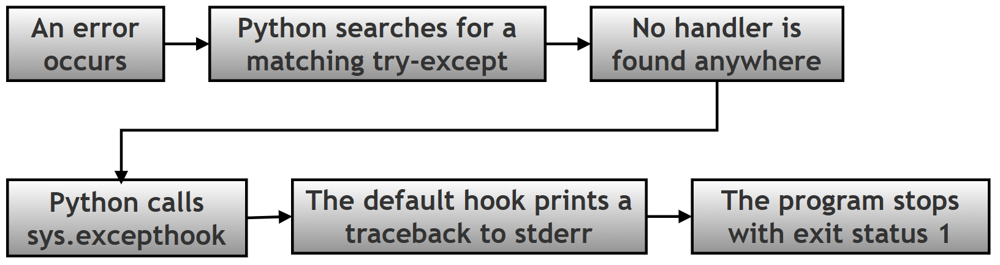
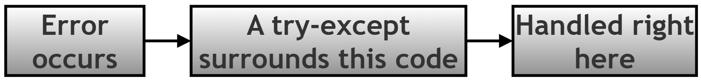
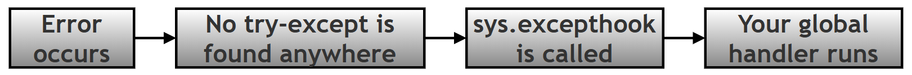
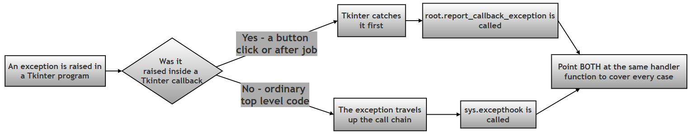
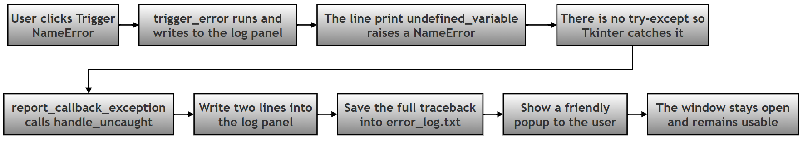
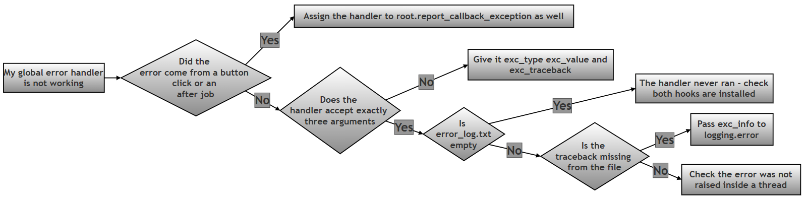

Handling Uncaught Exceptions in Tkinter with sys.excepthook — Worked Answer¶
Table of Contents¶
- About This Page
- Research / Project Question
- Answer to Part A — Theory
- The Tkinter Complication: Why
sys.excepthookIs Not Enough On Its Own - Flowchart Showing the Execution of the Script
- Answer to Part B — The Model Script
- Answer to Part C — Reflection
- Common Errors and How to Fix Them
About This Page¶
This page is part of the extended, GitHub-only material that accompanies Chapter 14 (Tkinter and GUI Programming) of the printed textbook. It contains one of the chapter's research and project questions, followed by a complete worked answer: the theory, a full model program, a reflection, and a troubleshooting guide.
The subject is what happens when something goes wrong that you did not plan for. Every beginner learns try-except early, and try-except is excellent — as long as you guessed correctly about where trouble would arise. Real programs fail in places nobody predicted. This page is about the safety net underneath everything else: a single place where the program can catch anything that slipped past every try-except, record it, and tell the user something sensible instead of collapsing.
Why This Topic Matters for Python and for Chapter 14¶
For Python in general: sys.excepthook is one of those quiet features that separates a script from an application. A script can afford to print a traceback and stop — the person running it is usually the person who wrote it. An application cannot, because the person using it did not write it, cannot read a traceback, and has no idea what to do with the words "Traceback (most recent call last)". Learning where an exception actually travels once it escapes your code teaches you something fundamental about how Python itself is put together, and the same idea reappears in web frameworks, background workers and logging systems.
For this chapter in particular: the printed chapter shows how to build a window and respond to clicks. This page adds the layer that a finished application needs: what the program does when a click leads somewhere unexpected. It also uncovers an important surprise specific to Tkinter, described in its own section below, which is that sys.excepthook on its own does not catch errors from button clicks. That single fact is the difference between an error handler that works and one that only looks as though it does.
Every error message, log file and block of output on this page was produced by actually running the code on Python 3.12 with Tk 8.6.14.
Key Terms Used On This Page¶
| Term | In plain words | Learn more |
|---|---|---|
| Exception | Python's word for an error that happens while the program is running, such as dividing by zero or using a name that does not exist. | Python docs: Errors and Exceptions |
| Traceback | The block of text Python prints when an error is not handled. It lists the error, the line it happened on, and the chain of function calls that led there. | Python docs: traceback |
try-except |
The statement used to deal with an error in one particular place. Risky code goes in the try part; what to do about a failure goes in the except part. |
Python docs: Handling Exceptions |
sys.excepthook |
A function Python calls when an exception reaches the top of the program without being handled anywhere. You can replace it with your own function. | Python docs: sys.excepthook |
report_callback_exception |
Tkinter's own equivalent of sys.excepthook, used for errors raised inside button clicks, after() jobs and event bindings. Explained in its own section below. |
Python docs: tkinter |
logging |
Python's built-in module for recording what a program did, usually to a file, so that problems can be investigated later. | Python docs: logging |
stderr |
The "error output" channel. Tracebacks are printed here rather than to the normal output, and it usually appears in the terminal window a program was launched from. | Python docs: sys.stderr |
| Callback | A function handed to something else so that it can be called later — for example, the function given to a button's command= option. |
Wikipedia: Callback |
Research / Project Question¶
Handling Uncaught Exceptions in Tkinter¶
Normally, Python programs display a traceback error and may stop execution when an exception is not handled using: try-except
However, GUI applications often require a more user-friendly way to handle unexpected errors.
Research how Python handles uncaught exceptions and investigate the role of: sys.excepthook in overriding Python’s default error-handling behavior.
Your Task¶
Part A — Theory¶
Research and explain the following:
- What is an uncaught exception?
- How does Python normally respond to exceptions that are not handled using
try-except? -
What is:
sys.excepthookand what is its purpose? -
Explain the difference between:
- Local Exception Handling:
try-except - Global Exception Handling:
sys.excepthook
- Local Exception Handling:
-
Why might GUI applications prefer a friendly popup message instead of a traceback?
Part B — Script Writing¶
Write a Tkinter program that:
- Creates a GUI window.
- Displays a scrolling log area (
Textwidget). -
Uses:
loggingto save errors to a file named:error_log.txt -
Defines a custom function to handle uncaught exceptions.
- Overrides Python’s default exception route using:
sys.excepthooktogether with Tkinter’sreport_callback_exception - Adds a button with label:
Trigger NameError - Intentionally creates an uncaught exception when the button is clicked.
- Displays a friendly popup message instead of crashing.
Part C — Reflection¶
Answer the following:
What would happen if:
sys.excepthookwere not overridden? Explain briefly.
Expected Learning Outcome¶
After completing this task, students should be able to:
- explain uncaught exceptions.
- distinguish between local and global error handling.
- understand how
sys.excepthookworks. - build safer Tkinter applications.
- create user-friendly error reporting
Optional Follow-Up Questions (not part of the printed book)¶
These extra questions appear only on this online page, for readers who want to take the investigation further. They are not required in order to answer the printed question.
- F1. Install
sys.excepthookin a Tkinter program, then raise an error from a button click. Does your handler run? Now raise the same error at the top of the file, beforemainloop()starts. Does it run this time? Explain the difference between the two results. - F2. Open
error_log.txtafter triggering an error. What exactly was written to it? How would you change thelogging.error()call so the file records the full traceback rather than only the error message? - F3. Python 3.8 added
threading.excepthookfor errors raised inside threads. Why was a separate hook needed, rather thansys.excepthookcovering threads too? - F4. A global handler catches everything, including errors you could have predicted and handled properly. Why is it still better to write a
try-exceptaround code you know might fail, rather than relying on the global handler for everything? - F5. After the popup is dismissed in the model program, the window is still open and usable. Is that always the right choice? Describe one situation in which an application should shut down after an unexpected error instead of carrying on.
Answer to Part A — Theory¶
A1. What is an Uncaught Exception?¶
An exception is an error that occurs while a program is running.
Examples include:
NameError
ValueError
ZeroDivisionError
IndexError
Normally, programmers handle exceptions using try-except.
However, when an exception is not handled, it becomes an:
uncaught exception
Example: print(undefined_variable)
Here undefined_variable does not exist, so Python raises a NameError. Further, if no try-except block catches it, the exception becomes uncaught.
It is worth being precise about what "uncaught" means, because it is not simply "an error happened". When an exception is raised, Python does not give up straight away. It looks at the function where the error occurred and asks whether that line sits inside a try block with a matching except. If not, it abandons that function and asks the same question of whoever called it. It keeps travelling back up the chain of calls, and only if it reaches the very top without finding a handler does the exception count as uncaught.
| Stage | What Python does | Is the exception caught? |
|---|---|---|
| The error happens | An exception object is created, carrying the type and the message. | Not yet. |
| Inside the current function | Python looks for a matching try-except around that line. |
Caught if one is found; the program carries on normally. |
| Back up the chain of callers | The search repeats in each calling function, in turn. | Caught if any of them has a matching handler. |
| The top of the program | No handler was found anywhere. | Uncaught. This is where sys.excepthook takes over. |
That last row is the whole subject of this page: sys.excepthook is not an alternative to try-except, it is what happens after every try-except has had its chance and none of them applied.
A2. How Does Python Normally Respond to Unhandled Exceptions?¶
By default, Python follows this sequence:

Notice the fourth box, which the short version of this story usually leaves out. Printing the traceback is not something Python does directly — it is done by sys.excepthook, which is simply the function Python happens to have installed there by default. That is exactly why replacing it changes what happens.
Example:
x = 10 / 0
Output:
Traceback (most recent call last):
File "example.py", line 1, in <module>
x = 10 / 0
~~~^~~
ZeroDivisionError: division by zero
This detailed error report is called a traceback.
A traceback contains:
- type of error,
- error message,
- line number,
- sequence of function calls.
Although useful for programmers, traceback messages may confuse normal users.
Two further details are worth knowing:
- The traceback goes to stderr, not to normal output. If a program was started by double-clicking an icon rather than from a terminal, there may be no window for it to appear in at all, so the message is simply lost.
- The program ends with exit status 1, the conventional signal that something went wrong. A status of 0 means success.
A3. What is sys.excepthook and What is Its Purpose?¶
Python provides a built-in mechanism called sys.excepthook. It controls:
what Python should do when an uncaught exception occurs
By default:
However, programmers can replace Python’s default behaviour:
sys.excepthook = handle_uncaught
Now, instead of showing an unfriendly traceback, your own handle_uncaught() function runs. That function can:
- display a friendly popup,
- save errors to a log file,
- notify the user,
- prevent abrupt crashes.
Thus:
sys.excepthookprovides global exception handling.
The shape your function must have. sys.excepthook is not called with a single error object. Python passes it exactly three arguments, so your replacement must accept three:
def handle_uncaught(exc_type, exc_value, exc_traceback):
...
| Argument | What it holds | Example |
|---|---|---|
exc_type |
The class of the error. Use exc_type.__name__ to get its plain name. |
NameError |
exc_value |
The exception object itself. Printing it gives the message. | name 'undefined_variable' is not defined |
exc_traceback |
The full stack trace object, showing every line involved. | Used by logging to record where the error happened. |
If your function takes the wrong number of arguments, Python cannot call it, and you end up with an error inside your error handler — a confusing situation worth avoiding.
One important limitation. sys.excepthook covers uncaught exceptions in the main thread of an ordinary program. It does not cover exceptions raised inside other threads — Python 3.8 added a separate threading.excepthook for those — and, crucially for this chapter, it does not cover exceptions raised inside Tkinter callbacks either. That last point has its own section below, because it changes how the model program has to be written.
A4. Difference Between Local and Global Exception Handling¶
| Feature | Local Exception Handling | Global Exception Handling |
|---|---|---|
| Method | try-except |
sys.excepthook |
| Scope | One specific block of code | Entire application |
| Purpose | Handle expected errors locally | Catch uncaught errors |
| Programmer control | Explicitly written around risky code | Runs automatically |
| Example | File reading, division | Unexpected program failures |
| When you write it | Wherever you can predict a failure | Once, near the start of the program |
| Can the program continue afterwards? | Yes, normally by design | Only if your handler is written to allow it |
| What it is for | Errors you expected | Errors you did not expect |
Local exception handling (try-except)
try-except catches errors in a specific part of the program.
Example:
try:
age = int(text)
except ValueError:
print("Invalid input")
Only this section, the part fenced inside the try-except block, is protected. This is called local exception handling, because it works only in one location.
Global exception handling (sys.excepthook)
sys.excepthook catches errors that were not handled anywhere else.
Example:
sys.excepthook = handle_uncaught
Whenever an uncaught error occurs, Python automatically calls handle_uncaught(). This protects the entire application. But you, as the programmer, are expected to write that handle_uncaught() function yourself.
Hence: global exception handling.
Visual difference
Local handling:

Global handling:

They are partners, not rivals. It is tempting to conclude that a global handler makes try-except unnecessary. It does not, and it is worth understanding why. A try-except block knows exactly what went wrong and exactly where, so it can recover intelligently — ask the user to retype a number, fall back to a default setting, retry a download. A global handler knows only that something failed somewhere, so all it can sensibly do is record the problem and apologise. Use try-except wherever you can foresee a failure, and treat the global handler as the safety net for everything you could not foresee.
A5. Why Do GUI Applications Prefer Friendly Popup Messages?¶
GUI applications are designed for normal users. Most users will not understand a traceback, or the technical error details inside it.
Instead, GUI applications prefer friendly popup dialogs. For example:
Error: Something went wrong.
Please try again.
There are several separate reasons, and they are worth separating out:
| Reason | Explanation |
|---|---|
| The user cannot read a traceback | It is written for whoever wrote the program, in the vocabulary of Python's internals. To everyone else it reads as alarming nonsense. |
| The user may never see it at all | A traceback goes to stderr. An application launched by double-clicking its icon often has no terminal attached, so the message vanishes silently and the program simply appears to do nothing. |
| A popup cannot be missed | A dialog appears on top of the window and must be dismissed, so the user definitely knows something happened. |
| It protects unsaved work | A crash loses whatever the user was doing. A handled error can leave the window open so they can save first. |
| Tracebacks can reveal private details | File paths, user names, database names and occasionally sensitive values appear in tracebacks. A popup shows only what you choose to show. |
| The details are still kept | Writing the full traceback to a log file means the programmer loses nothing, while the user sees only the friendly summary. |
That last row is the key to doing this well. A good handler does not throw the technical detail away — it sends the short version to the user and the long version to a file.
The Tkinter Complication: Why sys.excepthook Is Not Enough On Its Own¶
This section is not part of the printed question, but no honest answer to Part B can leave it out.
The natural way to build the program in Part B is to write a handle_uncaught() function, assign it to sys.excepthook, and then trigger a NameError from a button click. It looks completely correct. It does not work, and it fails in the most confusing way possible: silently.
The reason is that Tkinter never lets a callback error reach the top of the program. Every function you give to command=, to after(), or to bind() is wrapped by Tkinter. If that function raises, Tkinter catches the exception itself and hands it to a method of its own called report_callback_exception, whose default behaviour is to print Exception in Tkinter callback and a traceback to stderr. The exception never travels any further, so sys.excepthook is never consulted.
Here is the test, reduced to its essentials. The same failing button is used twice: once with only sys.excepthook installed, and once with report_callback_exception installed as well.
# Step 1: Two handlers, so we can see which one Python actually uses.
import sys
import tkinter as tk
def sys_hook(exc_type, exc_value, exc_tb):
print(f" sys.excepthook ran -> {exc_type.__name__}")
def tk_hook(exc_type, exc_value, exc_tb):
print(f" report_callback_exception ran -> {exc_type.__name__}")
# Step 2: A button callback that always fails.
def boom():
print(undefined_variable)
# Step 3: Test one - install only sys.excepthook, the usual advice.
print("Test 1: sys.excepthook installed on its own")
sys.excepthook = sys_hook
root = tk.Tk()
b = tk.Button(root, text="boom", command=boom)
b.pack()
b.invoke() # invoke() clicks the button from code
root.update()
print(" (nothing above means no handler of ours ran)")
root.destroy()
# Step 4: Test two - install Tkinter's own hook as well.
print("\nTest 2: report_callback_exception installed as well")
root = tk.Tk()
root.report_callback_exception = tk_hook
b = tk.Button(root, text="boom", command=boom)
b.pack()
b.invoke()
root.update()
root.destroy()
The real output:
Test 1: sys.excepthook installed on its own
Exception in Tkinter callback
Traceback (most recent call last):
File "/usr/lib/python3.12/tkinter/__init__.py", line 1967, in __call__
return self.func(*args)
^^^^^^^^^^^^^^^^
File "demo_compare.py", line 12, in boom
print(undefined_variable)
^^^^^^^^^^^^^^^^^^
NameError: name 'undefined_variable' is not defined
(nothing above means no handler of ours ran)
Test 2: report_callback_exception installed as well
report_callback_exception ran -> NameError
In Test 1 the custom handler never ran. There was no popup, nothing was written to a log file, and the only sign of trouble was a traceback in a terminal the user is unlikely to be looking at. In Test 2, with one extra line, the handler ran exactly as intended.
A wider test confirms where each hook applies:
| Where the error is raised | Which hook Python actually uses |
|---|---|
Inside a button's command function |
report_callback_exception |
Inside a function scheduled with after() |
report_callback_exception |
Inside a function bound with bind() |
report_callback_exception |
At the top level of the script, before or after mainloop() |
sys.excepthook |
| Inside a separate thread | threading.excepthook |

The conclusion for Part B. The question asks you to override Python's default exception route using sys.excepthook, and the model program below does exactly that. But it also assigns the same function to root.report_callback_exception, because that is the only way the button in requirement 7 can produce the friendly popup in requirement 8. Pointing both names at one handler function costs one extra line and makes the program behave the way the question describes.
Flowchart Showing the Execution of the Script¶

The same sequence in text form, showing what happens from the moment the button is clicked:

Answer to Part B — The Model Script¶
The program is built up step by step below, and given as one complete file in Section B6. Teaching print() statements have been added at each stage, and write_log() prints to the terminal as well as to the window, so the log panel and the terminal can be compared side by side.
B1. Imports and Logging Setup¶
Requirement 3 asks for errors to be saved to error_log.txt. logging.basicConfig() is the one-line way to arrange that.
# Step 1: Import everything the program needs.
import logging # writes error records to a file
import sys # gives access to sys.excepthook
import tkinter as tk
from tkinter import messagebox
# Step 2: Configure logging, so every error is saved to error_log.txt.
# level=ERROR means routine information is ignored and only errors are kept.
# The format puts a timestamp and the severity in front of each message.
log_level = logging.ERROR
log_format = "%(asctime)s - %(levelname)s - %(message)s"
logging.basicConfig(filename="error_log.txt", level=log_level, format=log_format)
print("Step 2 complete: logging configured, errors will be saved to error_log.txt")
The file is created in whatever folder the program is run from, and each new error is added to the end rather than replacing what is already there.
B2. The Window and the Live Log Panel¶
Requirements 1 and 2 ask for a window containing a scrolling log area. A Text widget serves as a small console inside the window, so the user can watch events as they happen.
# Step 3: Create the main window.
root = tk.Tk()
root.title("Global Hook Demo")
root.geometry("460x340")
print("Step 3 complete: main window created")
# Step 4: Create the live log panel - a Text widget that behaves like a
# small console inside the window, so the user can watch what happens.
log_box = tk.Text(root, height=10, width=52)
log_box.pack(padx=10, pady=10)
print("Step 4 complete: log panel created")
def write_log(message):
"""Adds one line to the log panel inside the window."""
# Step 4a: Add the message at the end of the Text widget.
log_box.insert(tk.END, message + "\n")
# Step 4b: Scroll down so the newest line is always visible.
# Without this the lines would keep piling up out of sight.
log_box.see(tk.END)
# Step 4c: Also print it to the terminal, so the two can be compared.
print(f" [log panel] {message}")
B3. The Custom Handler¶
Requirement 4 asks for a custom function to handle uncaught exceptions. This is the heart of the program, and it does four things in order: describe, display, record, and inform.
def handle_uncaught(exc_type, exc_value, exc_traceback):
"""
The single place where every uncaught error is dealt with.
Python passes three pieces of information to this function:
exc_type - the class of the error, for example NameError
exc_value - the error message itself
exc_traceback - the full stack trace, showing where it happened
"""
# Step 5a: Build a short, readable description of the error.
error_msg = f"{exc_type.__name__}: {exc_value}"
# Step 5b: Show what is happening in the log panel.
write_log("Global hook activated")
write_log(f"ERROR - {error_msg}")
# Step 5c: Save the full details to error_log.txt.
# exc_info takes the same three values, so the file gets the complete
# stack trace even though the popup only shows the short version.
logging.error(error_msg, exc_info=(exc_type, exc_value, exc_traceback))
write_log("Error saved to error_log.txt")
# Step 5d: Tell the user in plain language, instead of crashing.
messagebox.showerror("Unexpected Error", error_msg)
Note exc_info=(exc_type, exc_value, exc_traceback) in Step 5c. Without it, the log file would record only the one-line summary. With it, the file receives the entire traceback, so the user gets the short friendly message while the programmer keeps everything needed to diagnose the problem later.
B4. Installing the Handler in Both Places¶
Requirement 5 asks for sys.excepthook to be overridden. As shown in the section above, Tkinter also needs report_callback_exception, or the button in requirement 7 will produce nothing at all.
# Step 6: Install the handler in BOTH places that matter.
# sys.excepthook catches errors that reach the top level of the program.
sys.excepthook = handle_uncaught
# report_callback_exception catches errors raised inside Tkinter callbacks -
# button clicks, after() jobs, and event bindings. Tkinter catches those
# itself and never lets them reach sys.excepthook, so without this second
# line the popup would never appear when the button is clicked.
root.report_callback_exception = handle_uncaught
write_log("Global hook installed")
print("Step 6 complete: sys.excepthook and report_callback_exception both point to handle_uncaught")
One function, two entry points. Whichever route an error takes, it arrives at the same place.
B5. The Deliberate Error and the Button¶
Requirements 6 and 7 ask for a button labelled Trigger NameError that causes an uncaught exception.
def trigger_error():
"""Deliberately causes an uncaught NameError."""
# Step 7a: Show that the button was clicked.
write_log("Button clicked")
write_log("Triggering NameError")
# Step 7b: Use a name that was never defined. There is no try-except
# here on purpose, so the global handler is the only thing that can
# deal with it.
print(undefined_variable)
# Step 8: The button that causes the error.
tk.Button(root, text="Trigger NameError", command=trigger_error).pack(pady=10)
print("Step 8 complete: Trigger NameError button added")
# Step 9: Start the event loop and wait for the user.
root.mainloop()
undefined_variable is never assigned anywhere, so Python raises NameError the moment that line runs. There is deliberately no try-except around it — the whole point is to see the global handler do its work.
B6. The Complete Script¶
# Step 1: Import everything the program needs.
import logging # writes error records to a file
import sys # gives access to sys.excepthook
import tkinter as tk
from tkinter import messagebox
# Step 2: Configure logging, so every error is saved to error_log.txt.
log_level = logging.ERROR
log_format = "%(asctime)s - %(levelname)s - %(message)s"
logging.basicConfig(filename="error_log.txt", level=log_level, format=log_format)
print("Step 2 complete: logging configured, errors will be saved to error_log.txt")
# Step 3: Create the main window.
root = tk.Tk()
root.title("Global Hook Demo")
root.geometry("460x340")
print("Step 3 complete: main window created")
# Step 4: Create the live log panel - a Text widget that behaves like a
# small console inside the window, so the user can watch what happens.
log_box = tk.Text(root, height=10, width=52)
log_box.pack(padx=10, pady=10)
print("Step 4 complete: log panel created")
def write_log(message):
"""Adds one line to the log panel inside the window."""
# Step 4a: Add the message at the end of the Text widget.
log_box.insert(tk.END, message + "\n")
# Step 4b: Scroll down so the newest line is always visible.
log_box.see(tk.END)
# Step 4c: Also print it to the terminal, so the two can be compared.
print(f" [log panel] {message}")
def handle_uncaught(exc_type, exc_value, exc_traceback):
"""
The single place where every uncaught error is dealt with.
Python passes three pieces of information to this function:
exc_type - the class of the error, for example NameError
exc_value - the error message itself
exc_traceback - the full stack trace, showing where it happened
"""
# Step 5a: Build a short, readable description of the error.
error_msg = f"{exc_type.__name__}: {exc_value}"
# Step 5b: Show what is happening in the log panel.
write_log("Global hook activated")
write_log(f"ERROR - {error_msg}")
# Step 5c: Save the full details to error_log.txt.
# exc_info takes the same three values, so the file gets the complete
# stack trace even though the popup only shows the short version.
logging.error(error_msg, exc_info=(exc_type, exc_value, exc_traceback))
write_log("Error saved to error_log.txt")
# Step 5d: Tell the user in plain language, instead of crashing.
messagebox.showerror("Unexpected Error", error_msg)
# Step 6: Install the handler in BOTH places that matter.
# sys.excepthook catches errors that reach the top level of the program.
sys.excepthook = handle_uncaught
# report_callback_exception catches errors raised inside Tkinter callbacks -
# button clicks, after() jobs, and event bindings. Tkinter catches those
# itself and never lets them reach sys.excepthook, so without this second
# line the popup would never appear when the button is clicked.
root.report_callback_exception = handle_uncaught
write_log("Global hook installed")
print("Step 6 complete: sys.excepthook and report_callback_exception both point to handle_uncaught")
def trigger_error():
"""Deliberately causes an uncaught NameError."""
# Step 7a: Show that the button was clicked.
write_log("Button clicked")
write_log("Triggering NameError")
# Step 7b: Use a name that was never defined. There is no try-except
# here on purpose, so the global handler is the only thing that can
# deal with it.
print(undefined_variable)
# Step 8: The button that causes the error.
tk.Button(root, text="Trigger NameError", command=trigger_error).pack(pady=10)
print("Step 8 complete: Trigger NameError button added")
# Step 9: Start the event loop and wait for the user.
root.mainloop()
B7. Expected Output¶
When the program starts, the terminal shows the setup steps and the window opens with one line already in its log panel:
Step 2 complete: logging configured, errors will be saved to error_log.txt
Step 3 complete: main window created
Step 4 complete: log panel created
[log panel] Global hook installed
Step 6 complete: sys.excepthook and report_callback_exception both point to handle_uncaught
Step 8 complete: Trigger NameError button added
After clicking Trigger NameError, the terminal continues:
[log panel] Button clicked
[log panel] Triggering NameError
[log panel] Global hook activated
[log panel] ERROR - NameError: name 'undefined_variable' is not defined
[log panel] Error saved to error_log.txt
A popup appears reading:
Unexpected Error
NameError: name 'undefined_variable' is not defined
And the log panel inside the window contains:
Global hook installed
Button clicked
Triggering NameError
Global hook activated
ERROR - NameError: name 'undefined_variable' is not defined
Error saved to error_log.txt
Most importantly, the window is still open and still usable. The button can be clicked again, and the whole sequence repeats.
The contents of error_log.txt. This is the part the user never sees and the programmer relies on:
2026-09-08 06:46:02,817 - ERROR - NameError: name 'undefined_variable' is not defined
Traceback (most recent call last):
File "/usr/lib/python3.12/tkinter/__init__.py", line 1967, in __call__
return self.func(*args)
^^^^^^^^^^^^^^^^
File "global_hook_demo.py", line 82, in trigger_error
print(undefined_variable)
^^^^^^^^^^^^^^^^^^
NameError: name 'undefined_variable' is not defined
The timestamp, the error and the exact line are all recorded. The user saw one short sentence; the programmer has everything.
Answer to Part C — Reflection¶
What would happen if sys.excepthook were not overridden?
Python would fall back on the default hook that it installs at start-up, and the answer then depends on where the error occurs. In a Tkinter program there are two different outcomes, and both are bad for the user in different ways.
For an error in ordinary, top-level code, the default sys.excepthook:
- Prints the full traceback to
stderr. - Ends the program with exit status 1.
The consequences are that the window disappears without warning, any unsaved work is lost, nothing is written to a log file, and the traceback is shown in a terminal the user may not have open. If the program was started by double-clicking an icon, there is no terminal at all, so the application simply vanishes with no explanation whatsoever.
For an error inside a button click or another Tkinter callback — which covers most of what an application actually does — the error never reaches sys.excepthook in the first place. Tkinter's own default handler prints Exception in Tkinter callback and a traceback to stderr, then carries on. The window stays open, which sounds better, but from the user's point of view it is arguably worse: they clicked a button and absolutely nothing happened. No popup, no message, no visible change. They will click again, get the same silence, and conclude that the program is broken.
| Default behaviour | With a custom handler installed | |
|---|---|---|
| Top-level error: what the user sees | The application disappears | A clear popup explaining what went wrong |
| Callback error: what the user sees | Nothing at all | A clear popup explaining what went wrong |
| Where the details go | stderr, often into a terminal nobody is watching |
error_log.txt, kept permanently |
| Unsaved work | Lost on a top-level error | The window stays open, so it can be saved |
| Can the programmer investigate later? | Only if someone copied the traceback down | Yes, the log file has the full trace with a timestamp |
In short, overriding the hook changes an error from something that either kills the program silently or does nothing visible at all, into something the user is told about and the programmer can investigate afterwards.
Common Errors and How to Fix Them¶
| Symptom | Likely cause | Fix |
|---|---|---|
| The button click produces no popup and nothing in the log file, but a traceback appears in the terminal | Only sys.excepthook was installed. Tkinter routes callback errors elsewhere. |
Also assign the same function to root.report_callback_exception. |
TypeError: handle_uncaught() takes 1 positional argument but 3 were given |
The handler was written to take a single argument. | It must accept exactly three: exc_type, exc_value, exc_traceback. |
error_log.txt is created but stays empty, 0 bytes |
The handler never actually ran, so logging.error() was never reached. |
Check that both hooks are installed, using the test in the section above. |
| The log file records only one line, with no traceback | logging.error(error_msg) was called without exc_info. |
Use logging.error(error_msg, exc_info=(exc_type, exc_value, exc_traceback)). |
| Nothing is written to the log file even though the handler runs | logging.basicConfig() was called after the first logging call, or another library configured logging first. basicConfig only takes effect once. |
Call it once, near the top of the program, before anything else logs. |
| The popup appears but the window then freezes | The handler itself raised an error, for example by touching a widget that no longer exists. | Keep the handler simple, and check winfo_exists() before updating a widget from it. |
| A stream of identical popups appears | The error happens repeatedly, for example inside a repeating after() job. |
Cancel the repeating job inside the handler, or count errors and stop after a few. |
| Errors inside a thread are still not caught | sys.excepthook does not cover threads. |
Use threading.excepthook, added in Python 3.8. |
